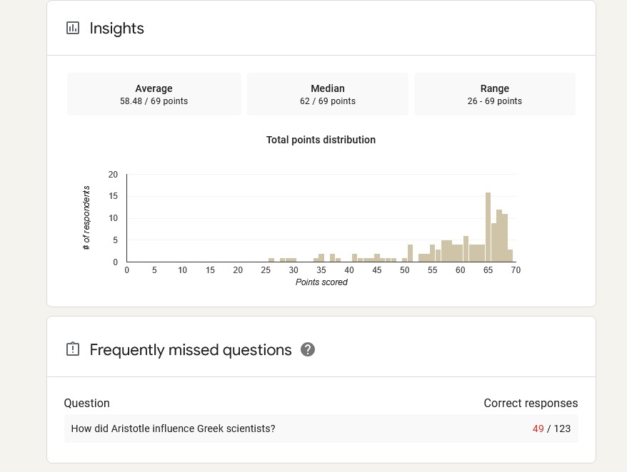

Above is an image of my students' end-of-trimester exam results. The exam covered everything that students had learned throughout their second trimester. While looking at these test results in specific terms, I noticed that my students were overall very successful. However, there was one question they scored abnormally low on, which is at the bottom of the image. This helps me because I now know that in the future it will be important for me to cover that specific question in more depth and spend more time on it. At the end of each test, quiz, project, and essay, it is very important to me that I quickly grade whatever they just handed in. This is because if I can interpret their results quickly, I will be able to provide feedback to them before we move on to a new topic. This allows me to reinforce any weak points my students might have before they take a big test, and this has led to my classes succeeding on tests more often.